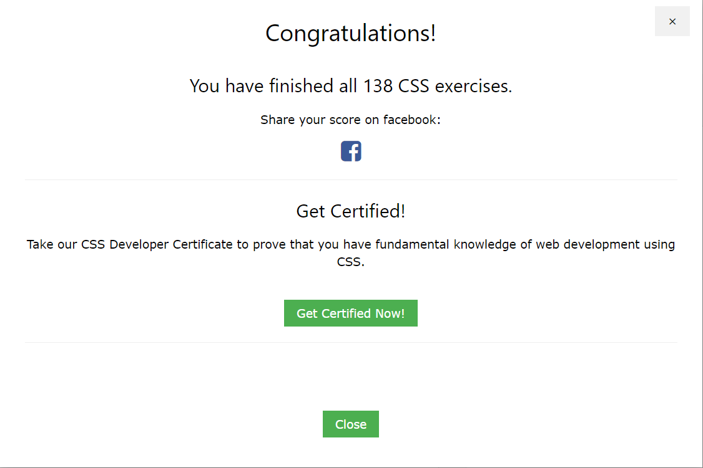

<h1>Repaso de CSS3</h1>

<h3>Selecciona en el men&uacute; de la izquierda el elemento que quieras revisar.</h3>
<p>Este es el resultado de realizar los ejercicios de CSS3 de la <a href="https://www.w3schools.com/css/exercise.asp" target="_blank">página de w3school</a>:</p>

